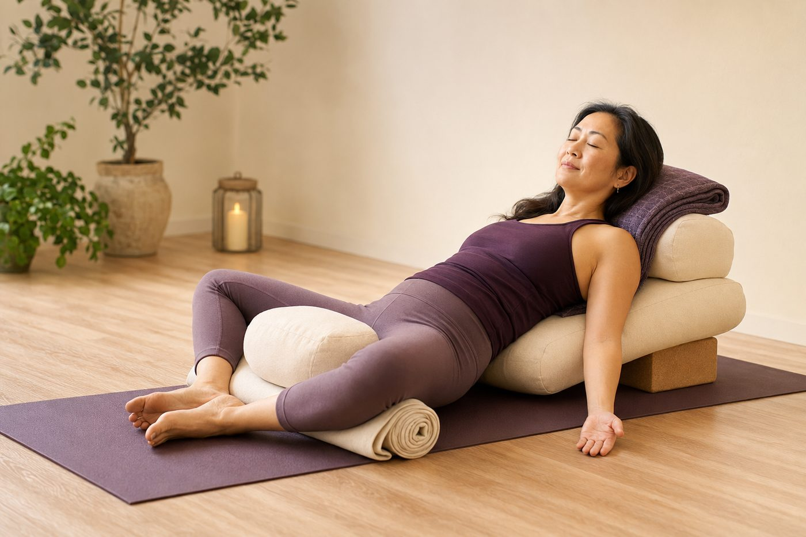

開髖一定要壓低、拉到痛才有效嗎？

旁邊的同學坐得很低，你看著自己還浮在半空的膝蓋，手已經想往下壓。這時先停一下，問自己是不是只是想跟上別人的幅度。
開髖練習可以從髖在不同方向的活動開始，幅度要看個人感受與動作需求。用手硬壓膝蓋會增加外力，坐高、扶穩或縮小幅度則能改變支撐條件。可以比較在不同支點下能否自在呼吸及回位。刺痛、卡住或反覆不適時先停止；單靠感受不能判定髖關節問題。
為什麼開髖不必硬壓到更低？
髖可以往不同方向移動，雙腿分開只是其中一種做法。想知道開髖指的是哪些方向，可以看支柱介紹。練習時先留意能否平穩回位；如果手壓的是膝蓋，可另看瑜伽課膝部不舒服怎麼退階。
👆 手機版可左右滑動
| 練習時的念頭或感受 | 可以怎麼調整 | 判斷界線 |
|---|---|---|
| 想比旁邊的人坐得更低 | 縮小幅度，保持能慢慢返回的位置。 | 深度不是個人進度的唯一線索。 |
| 想把膝蓋往地上壓 | 鬆開施力，改為坐高或換成有支點的版本。 | 不必用額外壓力追姿勢。 |
| 開始刺痛或卡住 | 停止動作，向老師說明。 | 反覆或加劇時尋求醫療評估。 |
做到一半刺痛或卡住，可以繼續試嗎？
先退出當下的幅度。反覆刺痛、活動受限或不適加劇，請尋求醫療評估。若真正困擾的是盤腿後腳開始麻，先換坐法，不要把腳麻當成需要壓得更深。
常見問題
開髖一定要劈腿嗎？
開髖可包含髖在不同方向的活動，並不以劈腿或貼地作為要求。
拉到痛是練習有效的訊號嗎？
疼痛不適合作為追求幅度的目標。感到刺痛時先停下。
先記下最有感的日常時刻
記下哪個動作最容易讓你想硬撐，或在哪個姿勢更希望有支點。
約 2 分鐘，免登入、免加 LINE。做完可用 3 天觀察卡整理日常感受。
開始免費 2 分鐘體態訊號掃描 →延伸閱讀 先了解髖的活動方向